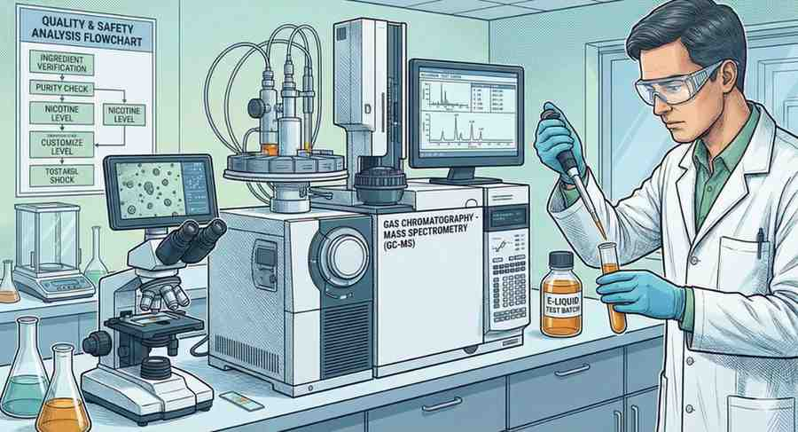

Cara Memilih Liquid Vape Kualitas Tinggi & Aman

Panduan komprehensif untuk memastikan Anda hanya mengonsumsi produk vaping terbaik tanpa risiko kesehatan tersembunyi.
Daftar Isi
Kenapa Kualitas Liquid Sangat Penting bagi Kesehatan Anda?
Memilih liquid vape bukan hanya tentang mencari rasa yang enak di lidah atau menghasilkan awan uap (cloud) yang tebal dan putih. Lebih dari itu, ini adalah tentang apa yang Anda masukkan ke dalam sistem pernapasan Anda ribuan kali setiap harinya. Paru-paru adalah organ yang sangat sensitif, dan kualitas bahan yang dihirup akan menentukan kesehatan jangka panjang Anda.
Di pasar yang dibanjiri oleh ribuan merk, liquid berkualitas rendah seringkali diproduksi di fasilitas yang tidak higienis. Produk-produk ini berisiko mengandung kontaminan logam berat dari peralatan produksi yang buruk, sisa pelarut dari ekstraksi yang tidak sempurna, atau bahkan bahan kimia industri yang tidak seharusnya masuk ke dalam tubuh manusia. Menjadi konsumen yang teredukasi adalah garis pertahanan pertama Anda.
1. Periksa Sertifikat Analisis (Certificate of Analysis / COA)
Produsen profesional dan transparan seperti VapeGrape selalu menyediakan laporan laboratorium dari pihak ketiga untuk setiap batch produknya. Sertifikat Analisis (COA) bukan sekadar dokumen formalitas; ini adalah bukti ilmiah tentang keamanan produk tersebut.
Saat Anda memeriksa COA, pastikan laporan tersebut mencakup pengujian untuk:
- Logam Berat: Cairan harus bebas dari timbal, arsenik, kadmium, dan merkuri.
- Kandungan Nikotin/CBD: Harus sesuai dengan apa yang tertulis di label. Ketidakakuratan kadar dapat menyebabkan overdosis ringan atau rasa pening.
- Residu Pelarut: Memastikan proses ekstraksi tidak meninggalkan sisa bahan kimia pelarut seperti aseton atau etanol.
- Mikrobiologi: Memastikan tidak ada koloni bakteri atau jamur yang berkembang dalam cairan.
Jika distributor tidak bisa menunjukkan COA, sebaiknya Anda mencari alternatif merk lain yang lebih transparan. Di VapeGrape, integritas produk adalah komitmen utama kami.
2. Memahami Kandungan Bahan Dasar: USP Grade vs Food Grade
Pastikan liquid Anda menggunakan bahan dasar standar farmasi, yaitu USP (United States Pharmacopeia) Grade. Ada perbedaan besar antara "Food Grade" (aman dimakan) dan "USP Grade" (aman dihirup melalui uap).
Bahan utama yang harus Anda perhatikan adalah:
- Vegetable Glycerin (VG): Berasal dari minyak nabati. VG organik jauh lebih baik karena bebas dari sisa pestisida tanaman asal.
- Propylene Glycol (PG): Digunakan untuk membawa rasa dan memberikan "throat hit". Pastikan PG yang digunakan murni 99.9%.
Beberapa produsen nakal menggunakan bahan dasar tingkat industri untuk menekan biaya produksi. Bahan industri mengandung impuritas yang dapat menyebabkan iritasi tenggorokan kronis hingga kerusakan paru-paru permanen jika dihirup secara konsisten.
Keamanan pengguna adalah prioritas utama di atas segalanya. Jangan pernah mengorbankan integritas kesehatan Anda demi penghematan harga liquid yang murah dan mencurigakan.
3. Waspada terhadap Perasa Kimia Terlarang (Diacetyl & Popcorn Lung)
Diacetyl adalah bahan kimia aromatik yang sering digunakan untuk memberikan rasa mentega atau "creamy" pada makanan. Meskipun aman dikonsumsi dalam makanan, diacetyl sangat berbahaya jika dipanaskan dan dihirup. Penelitian telah menghubungkannya dengan penyakit "Bronchiolitis Obliterans" atau yang populer dikenal sebagai Popcorn Lung.
Liquid premium kualitas tinggi selalu mencantumkan klaim "Diacetyl-Free" atau "Diketon-Free" pada labelnya. Produsen yang peduli akan kesehatan akan mengganti bahan pemanis sintetis dengan ekstrak alami atau bahan yang telah lolos uji toksikologi inhalasi. Selalu tanyakan kepada seller mengenai kandungan pemanis yang digunakan dalam liquid tersebut.
Gambar: Proses pengujian kromatografi untuk memastikan ketiadaan bahan berbahaya dalam liquid.
Cek Koleksi Premium Kami!
Semua produk VapeGrape telah lulus uji laboratorium Inggris yang ketat. Klik tombol di bawah untuk berkonsultasi mengenai profil rasa dan melihat hasil sertifikasi keamanan kami langsung via WhatsApp.
Tanya Admin via WA (Gratis Konsultasi)4. Keamanan Kemasan, Segel, dan Informasi Label
Kualitas produk juga tercermin dari bagaimana produk tersebut dikemas. Produk liquid berkualitas tinggi harus memiliki:
- Segel Keamanan (Child-Proof Cap): Penutup botol yang tidak mudah dibuka oleh anak-anak untuk mencegah keracunan tidak sengaja.
- Segel Plastik/Induksi: Memastikan produk belum pernah dibuka dan isinya tidak dioplos.
- Botol Anti-UV: Penggunaan botol kaca berwarna gelap atau plastik khusus untuk melindungi cairan dari degradasi akibat cahaya matahari.
- Label Informatif: Mencantumkan komposisi lengkap, tanggal produksi, tanggal kadaluwarsa, dan nomor batch.
5. Memahami Jenis Nikotin: Salt Nicotine vs Freebase
Kualitas liquid juga ditentukan oleh kualitas ekstraksi nikotinnya. Ada dua jenis utama di pasaran:
Freebase Nicotine: Nikotin murni yang memberikan "throat hit" yang lebih kuat. Cocok untuk penggunaan mod berdaya besar dengan kadar nikotin rendah (3mg atau 6mg).
Salt Nicotine: Nikotin yang diproses dengan asam sitrat atau asam benzoat agar lebih halus di tenggorokan meskipun kadarnya tinggi (25mg - 50mg). Salt nic berkualitas tinggi harus memiliki stabilitas pH yang tepat agar tidak menimbulkan saking berlebih pada device pod.
6. Cara Menyimpan Liquid Agar Kualitasnya Tetap Terjaga
Bahkan liquid terbaik pun bisa rusak jika tidak disimpan dengan benar. Oksidasi adalah musuh utama kualitas liquid. Berikut tips penyimpanannya:
- Hindari Panas Berlebih: Jangan simpan di dalam mobil atau dekat peralatan elektronik yang panas.
- Jauhkan dari Cahaya: Sinar UV dapat memutus ikatan molekul nikotin dan merubah warna cairan menjadi gelap.
- Tutup Rapat: Udara yang masuk terus menerus akan membuat rasa liquid menjadi "hambar" (stale).
Kesimpulan: Menjadi Vaper yang Cerdas
Memilih liquid vape adalah perpaduan antara seni mencari rasa dan sains menjaga kesehatan. Dengan memperhatikan Sertifikat Analisis (COA), memastikan penggunaan bahan USP Grade, dan menghindari bahan kimia berbahaya seperti diacetyl, Anda telah mengambil langkah besar untuk menjaga kesejahteraan diri Anda.
Di VapeGrape, kami tidak hanya menjual liquid; kami memberikan standar keamanan internasional. Seluruh lini produk kami diproduksi di fasilitas bersertifikat ISO di Inggris, memastikan setiap tetes yang sampai ke tangan Anda adalah hasil dari presisi sains dan dedikasi terhadap wellness. Jangan pernah ambil risiko dengan kesehatan Anda. Pilih yang pasti, pilih yang teruji.
Pertanyaan Sering Diajukan (FAQ)
Apa tanda liquid sudah kedaluwarsa?
Perubahan warna yang drastis menjadi
sangat gelap (oksidasi parah), bau yang berubah menjadi apek, dan adanya endapan kristal di
dasar botol adalah tanda Anda harus segera membuangnya.
Mengapa liquid saya terasa gatal di tenggorokan?
Bisa jadi karena kadar
nikotin terlalu tinggi, penggunaan perasa sintetis murahan, atau coil vape Anda yang sudah kotor
(crusted). Jika menggunakan liquid organik VapeGrape dan tetap gatal, cobalah turunkan kadar
nikotin Anda.
Apakah botol kaca lebih baik dari plastik?
Untuk penyimpanan jangka panjang
(lebih dari 6 bulan), botol kaca jauh lebih baik karena tidak berinteraksi secara kimiawi dengan
cairan dan lebih baik dalam menjaga kestabilan molekul perasa.

Sarah Wellness (Liquid specialist)
Sarah adalah seorang ahli kimia pangan yang telah berpindah fokus ke riset toksikologi inhalasi. Ia aktif membantu banyak brand internasional dalam memformulasikan liquid yang lebih aman dan ramah bagi penderita alergi perasa sintetis.
Edukasi Terkait Lainnya

Manfaat Nyata Menggunakan Vaping Organik
Mengapa bahan organik adalah masa depan industri vaping yang lebih sehat...
Baca Selengkapnya
Panduan Maintenance Device untuk Pemula
Tutorial agar device tetap prima dan memberikan rasa yang konsisten...
Baca Selengkapnya